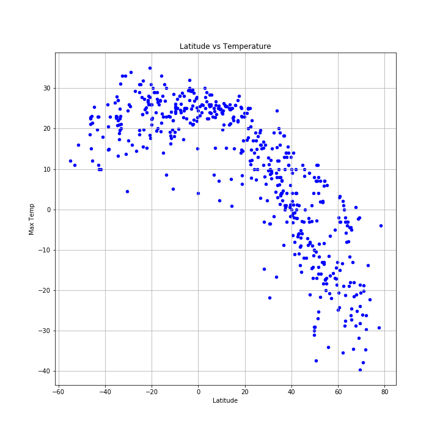

The purpose of this asignment was to research how latitude affected temperature, wind, humidity and clouds. To gather the data, I used OpenweatherMap API to obtain necessary datapoints of over 500 cities.
After the dataset was assembled, I used the Matplotlib library to create visualizations of how the latitude affected the weather of the cities. This website contains these visualizations, critical pieces of the dataset used, and summarized explanations of my findings.